sipXcom webui¶
The sipxcom webui is controlled by the sipxconfig service. Restarting the sipxconfig service will not interrupt calls. If you find the webui unresponsive or there is a “internal error”, try on the command line as root:
service sipxconfig restart
sipxconfig is a java jetty fronted by apache2. Self signed SSL certificates are used by default, so you can expect to see a warning about this in the web browser upon first login.
Note
Firefox or Chrome are the recommended browsers to interact with the webui. Issues have been reported with Internet Explorer and Edge.
Lets Encrypt Certificates are now available for use in the webui. The domain validation component requires that server have an A record in public DNS, and be accessible on port 80 (http) and 443 (https) from the public internet. If a Lets Encrypt certificate is used the server will automatically renew the SSL certificate – for free! The CA is also trusted by all browsers.
Other options are to purchase a certificate from a trusted CA, use your own CA, or ignore the warning.
Initial Login¶
Warning
Beware of browser auto-fill features unintentionally changing important fields like Password, PIN, or SIP password!
The default administrative account is “superadmin”. The first login to the webui will prompt to set the superadmin password.
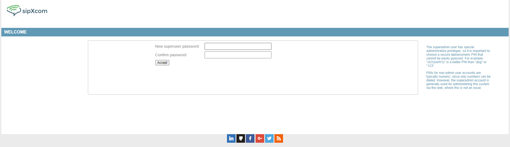
Resetting the superadmin password¶
If you need to reset the superadmin password, issue on the command line as root:
service sipxconfig reset-superadmin
Restart your browser and upon next login use a blank password for the superadmin password.
Show Advanced Settings¶
Some fields or options are hidden by default. For example, the user SIP password on the user properties page. Use the “Show Advanced Settings” option on the page to see all available settings and options of the page.
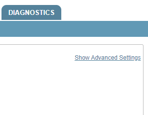
Warning
Avoid leaving your browser open for extended periods of time on pages that automatically refresh, such as diagnostics - registrations page and features - conferencing. Another option is to uncheck the option to automatically refresh.
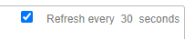Repeated requests to these pages (and others such as running large CDR reports) may result in a sipxconfig java out of memory error. Try a ‘service sipxconfig restart’ as the root user on the primary (webui) server if you encounter that. This will restart only the webui service and related components. It is not disruptive to telephony services.
Note
The sipxconfig maximum java heap (-Xmx) size is 1GB by default. The value can be changed but will likely be overwritten upon any future sipxconfig rpm upgrades.
It is configured in the /etc/init.d/sipxconfig file:
Command="$JavaCmd \
-Dprocname=${procNameId} \
-XX:MaxPermSize=128M \
-Xmx1024m \
The java manual page (man java) suggests the maximum value would be 2048m:
-Xmxn
Specifies the maximum size, in bytes, of the memory allocation pool. This value must a multiple of 1024 greater than 2 MB. Append the letter k or K to indicate kilobytes, or m or M to indicate megabytes. The default
value is chosen at runtime based on system configuration.
For server deployments, -Xms and -Xmx are often set to the same value. See Garbage Collector Ergonomics at http://docs.oracle.com/javase/7/docs/technotes/guides/vm/gc-ergonomics.html
Examples:
-Xmx83886080
-Xmx81920k
-Xmx80m
On Solaris 7 and Solaris 8 SPARC platforms, the upper limit for this value is approximately 4000 m minus overhead amounts. On Solaris 2.6 and x86 platforms, the upper limit is approximately 2000 m minus overhead
amounts. On Linux platforms, the upper limit is approximately 2000 m minus overhead amounts.
Users Tab¶
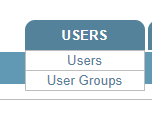
The users tab includes the Users, and User Group menu items.
Users¶
RFC-3261 section 4 provides an excellent overview if you’re completely new to SIP.
There are two types of users - regular or phantom. Both will terminate the User ID field, and anything in the Alias field, as the user portion of a SIP URI.
Phantom Users¶
Phantoms are not allowed to register to the system. They are only used for call routing purposes, or as a general voicemail box target.
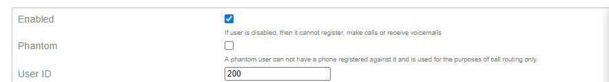
Warning
A phantom user is not allowed to register to the system. Changing a normal user to a phantom user can cause a REGISTER and SUBSCRIBE flood from any phones that were assigned to that user. This also applies to disabling (unchecking the “Enabled” option in the user profile) or deleting the user. You must first remove line assignments from any phones assigned to that user. Next send profiles to the phones, which should remove any current registrations of the user. Verify beneath users - $user - registrations. Don’t forget about any FXS gateways that may need to be manually configured. Only after you have checked these things should you delete, disable, or convert a user to phantom.
User ID¶
The “User ID” field is the internal extension number. It is typically numerical, as this is what other registered extensions would dial to call this user.
Note
DIDs should not be entered into this field. Use the alias field instead for that.
Alias Field¶
Non-numerical entries such as “matt” and DIDs are usually added in the aliases field. If you have a large number of DIDs to manage, consider using DID Pool feature instead of terminating them here.
Warning
When terminating DIDs it is important to list all possible variations of the DID. For example, in the United States the DID could be presented as 7 digit, 10 digit, 11 digit, or 11 digit prefixed with a +. To terminate all variations of the (fake) DID 4235551212 I’d need to list:
5551212 4235551212 14235551212 +14235551212
A missing entry here might instead match the outbound dial plan, which would introduce a signaling loop between outbound (egress) and inbound (ingress) traffic.
Password Field¶
This is the password the user will use to log into the sipxcom webui or using XMPP Instant Messaging chat client such as Pidgin. Jitsi and CounterPath Bria also have XMPP capabilities built-in.
Voicemail PIN¶
The Voicemail PIN is the numerical passcode the user enters to access voicemail.
SIP Password¶
The SIP password is the password a phone or soft phone uses register the line. The user ID field is the username the phone or softphone would use.
User Groups¶
User groups are a way to organize users into logical groupings in order to share common settings between the members of that group. There is an administrators group created by default, which the superadmin user is a member of.
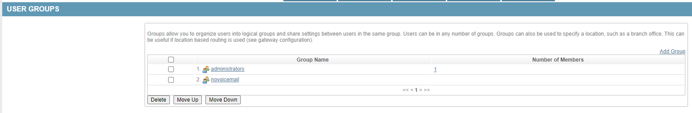
User Group Settings¶
User groups are a powerful tool for keeping the system easy to manage. The common settings available are Unified Messaging, Schedules, Conference, External User, Speed Dials, Music On Hold, Permissions, Caller ID, Personal Auto Attendant, Instant Messaging, Call Forwarding, and User Portal.
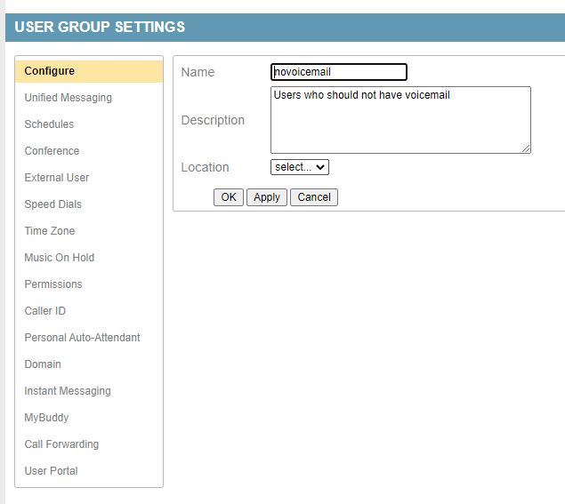
For example, a “novoicemail” group where the administrator has unchecked the “Voicemail” permission in the group properties beneath the Permissions tab.
Devices Tab¶
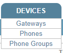
The devices tab includes Gateways, Phones, and Phone Groups menu items.
Sipxcom classifies physical equipment into two areas – managed and unmanaged. Generally speaking managed devices are devices the system can generate configuration files for. Unmanaged devices must be manually configured.
Gateways¶
Gateways provide connectivity out of the system such as out to the Public Switched Telephone Network (PSTN), or to interconnect with another PBX.
Managed or Unmanaged Gateway?¶
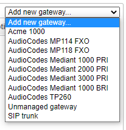
- A unmanaged gateway is usually something like an AudioCodes gateway, an SBC, or a different PBX. It is a device the server should be aware of to allow traffic, but a device the server cannot directly interact with to change configuration or restart. For example sipxcom can generate the .INI file that you would load on a AudioCodes gateway, but it cannot directly change the configuration of that gateway live or reboot it remotely.
- A managed gateway example would be a SIP Trunk to a ITSP. SIP trunks can be configured with or without authentication.
Note
If SIP trunk is selected the system will use the sipxbridge service to communicate with the ITSP by default. Sipxbridge listens on port 5080, so your ITSP should SIP traffic to port 5080 instead of port 5060.
Note
Unmanaged gateways such as AudioCodes gateways should send SIP traffic to the proxy service, which is listening on port 5060. Unmanaged gateways cannot be configured to authenticate.
Warning
You should only allow connections to 5080 or 5060 (and generally any labeled PUBLIC in the firewall rules page) from trusted source IPs. Do not expose them to the entire public internet!
Phones¶
The phones page is used to define phones to be managed by the server.
Managed or Unmanaged Phone?¶
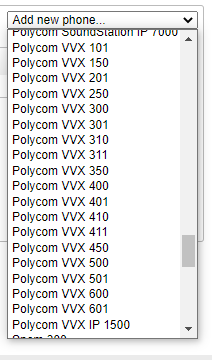- Unmanaged phones - It is not required to define the phone in order for that phone to register to the system. For example you only need the user ID and SIP password to register a Jitsi or CounterPath Bria soft phone.
- Managed Phones - These are phones sipxcom has a template for and that you want to centrally manage from the sipxcom webui.
When “send profiles” is used this regenerates the *.cfg files for that device, then attempts to send it a reboot command. The configuration files are stored beneath /var/sipxdata/configserver/phone/profile/tftproot/. The reboot command is sent via a “check-sync” event SIP NOTIFY like:
2020-10-20T03:23:12.890728Z:337948:OUTGOING:INFO:sipx.home.mattkeys.net:SipClientTcp-5043:7ff0ea672700:sipxproxy:SipUserAgent::sendTcp TCP SIP User Agent sent message:
----Local Host:192.168.1.14---- Port: -1----
----Remote Host:192.168.1.126---- Port: 5060----
NOTIFY sip:200@192.168.1.126;transport=tcp;x-sipX-nonat;sipXecs-CallDest=INT SIP/2.0
Record-Route: <sip:192.168.1.14:5060;lr>
Call-Id: b9d6a0732edf685a09aae8a24d61b3ce@192.168.1.14
Cseq: 100 NOTIFY
From: <sip:~~id~config@sipx.home.mattkeys.net>;tag=206087292
To: <sip:~~in~0004f28034d2@home.mattkeys.net>
Via: SIP/2.0/TCP 192.168.1.14;branch=z9hG4bK-XX-2ff7BwYh_bvFZp7K5e28muVtGg~P6CvTajezxHXKaDzP0uqhA
Via: SIP/2.0/UDP 192.168.1.14:5180;branch=z9hG4bK98271829329565e17ea8a136c99f2dd63434
Max-Forwards: 19
Contact: <sip:192.168.1.14:5180;transport=udp;x-sipX-nonat>
Event: check-sync
Subscription-State: Active
Content-Length: 0
Date: Tue, 20 Oct 2020 03:23:12 GMT
X-Sipx-Spiral: true
The phone must have a registered line in order to receive that SIP NOTIFY message, and the phone must be configured to use the correct provisioning protocol and server IP in order to download the files from the server.
Note
Don’t forget to configure your DHCP scopes with option 160 for http:// and https:// provisioning server addresses. For tftp:// or ftp:// provisioning addresses use option 66. If both are specified a Polycom will prefer option 160 by default. It’s also a good idea to specify option 42 for NTP servers. See also the Date and Time section to point sipxcom to those same NTP server(s).
Phone Groups¶
Phone groups are useful to group models together for similar configuration options. Other reasons might include:
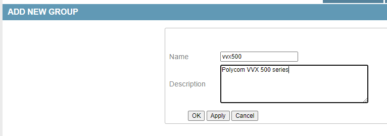
- Incompatible firmware between devices - Polycom SoundPoint IP series and Polycom VVX series phones run incompatible firmware with each other, so it would be useful to group them separately.
- Incompatible features or physical capabilities - There may be enough difference in the capabiilities or features of a series of models to necessitate separate grouping between the series. For example, the difference of color displays on the VVX 500 and the grayscale displays of the VVX 300/301s models.
- Production vs testbeds - Another reason would be to test the latest version firmware on a smaller subset of phones – production vs testbed.
- Physical Location – For example all VVX 500s at the Central Office.
Note
A good minimal practice is to create a group for each model you have in use.
Features Tab¶
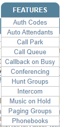
The features tab includes Auth Codes, Auto Attendants, Call Park, Call Queue, Callback on Busy, Conferencing, Hunt Groups, Intercom, Music on Hold, Paging Groups, and Phonebook menu items.
Auth Codes¶
Authorization codes provide the ability to a user to initiate a call that requires permissions to which it is normally not allowed.
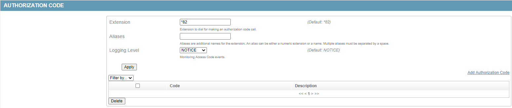
Auth Code options¶
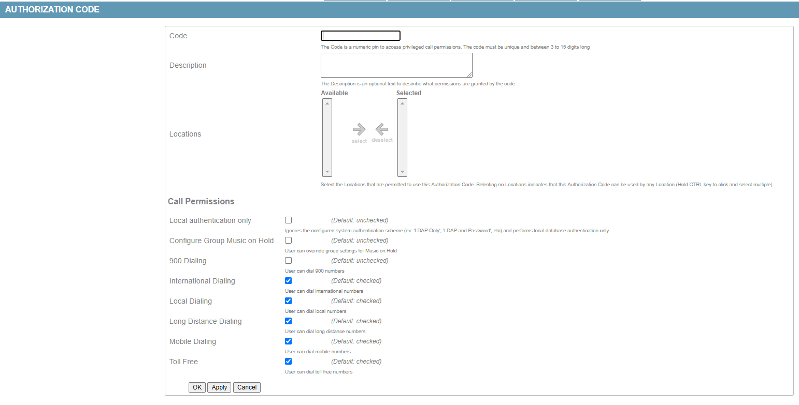
Auto Attendants¶
Sipxcom includes a multi-level auto attendant service.

Auto attendants provide automatic answering of incoming calls, dial-by-name directory, automated transfer to extension, access to voicemail remotely, and transfer to other auto attendants. For good auto attendant design, try to avoid nesting more than two auto attendants menus deep. This also applies to hunt groups.
Note
Consider using the more powerful Call Queue feature instead of nesting AAs.
By default a “Operator” and “After Hours” attendant are created. See the Dial Plans section on assigning extension numbers to auto attendants.
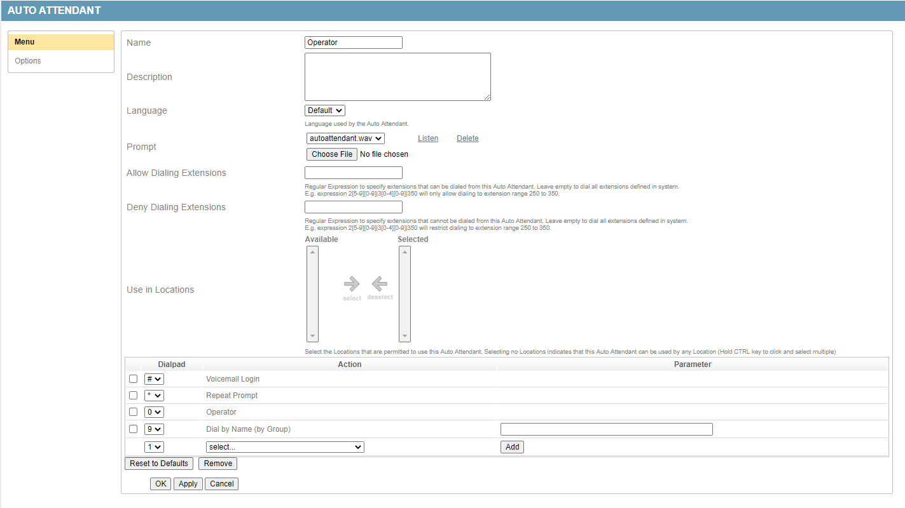
Note
wav files must be in the appropriate format of RIFF (little-endian) data, WAVE audio, Microsoft PCM, 16 bit, mono 8000 Hz
Note
There are three major standards for DTMF interpretation: RFC-2833 (inband within RTP), RFC-2976 (out of band SIP INFO), and RFC-3265 (out of band SIP NOTIFY). The AA/IVR only supports RFC-2833 by default.
Note
The auto attendant cannot dial a PSTN number as the target. It does not have dial plan permissions to use gateways. It can call a phantom user however, and that phantom user can call forward to the PSTN.
Call Park¶
The call park feature enables the transfer of calls to an extension. Calls can be retrieved after parking by pressing *4 followed by the extension number.
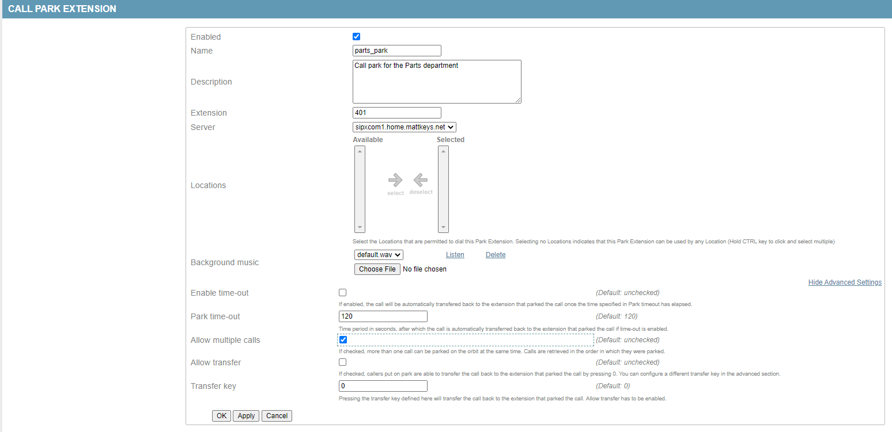
Call Queue¶
The call queue feature leverages the FreeSWITCH inbound call queueing application, mod_callcenter. This provides lightweight call center functionality by distributing the calls to agents using various scenarios and rules.
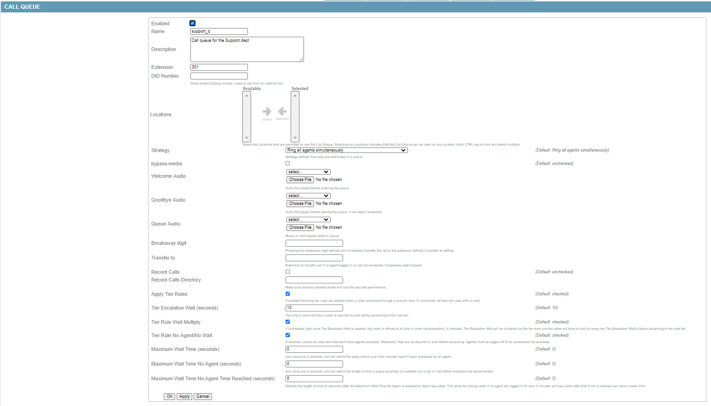
Callback on Busy¶
The Callback on Busy feature enables a caller to dial the callback prefix and an intended user number. When the intended user is available it will initiate a call between the two users, provided that the callback request has not expired. To request a callback, you need to dial the callback prefix (default *92) with the extension you want a callback from (example *92200).
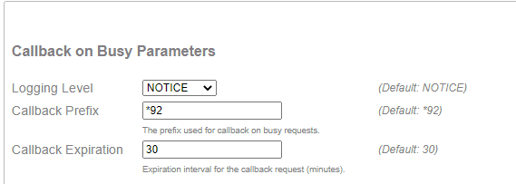
Conferencing¶
The conferencing feature leverages the FreeSWITCH inbound and outbound conference bridge service, mod_conference. You can create as many conferences as you like, but take care not to overcommit the system resources.
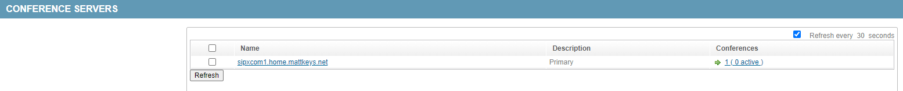
Adding a Conference Room¶
Conferences can be added from the features - conference - $server page, or beneath the user properties.
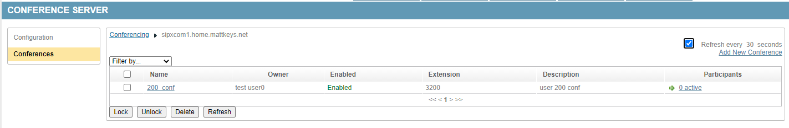
Hunt Groups¶
Hunt groups distribute a given inbound call to members of the group in either a broadcast-like “at the same time”, a sequential “if no response” manner, or combination of both.
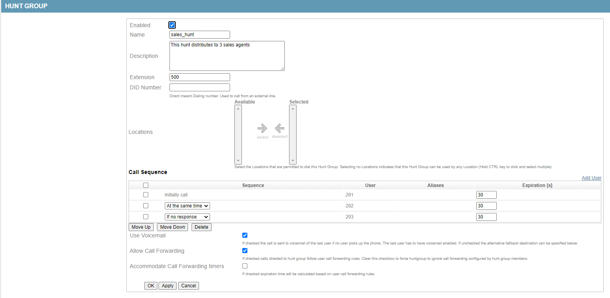
Warning
A hunt group should not exceed more than 5 members.
Signaling delay to endpoints is a common problem with hunt groups. This is due to the nature of the signaling involved. The larger the hunt group becomes, the greater the chance there will be a signaling delay issue. This may manifest as calls the hunt group members are unable to answer (call was CANCELed or answered elsewhere already). Hunt groups can be nested however this practice is also strongly discouraged for the same reasons.
Note
If more than 5 members or nesting is needed consider using the more powerful Call Queue feature instead, which utilizes FreeSwitch mod_callcenter instead of burdening the proxy.
Intercom¶
Intercom is only supported on devices that can be configured to automatically answer incoming calls. The intercom call can be initiated from any phone. To configure intercom create a new phone group and specify dial prefix.
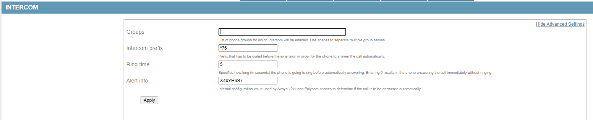
Music on Hold¶
Music on Hold (MoH) is supported on any phone model that implements IETF RFC-7008 . When incoming call is put on hold the caller will hear music from the source selected on this page. Files can be uploaded to system music directory, and existing files can be deleted. The default MoH files are Creative Commons licensed sound files that included in FreeSWITCH packages.
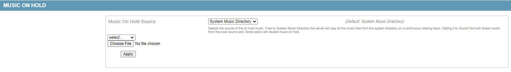
Users can also upload their own Music on Hold.
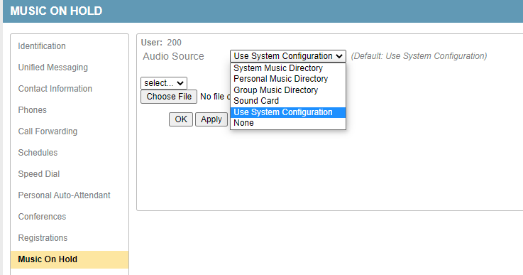
Note
wav files must be in the appropriate format of RIFF (little-endian) data, WAVE audio, Microsoft PCM, 16 bit, mono 8000 Hz
Paging Groups¶
The paging group contains a list of extensions to call when the paging prefix followed by the paging group number is dialed. You can make changes to the paging server configuration without affecting the running server. The paging server will be automatically restarted when the configuration is changed.
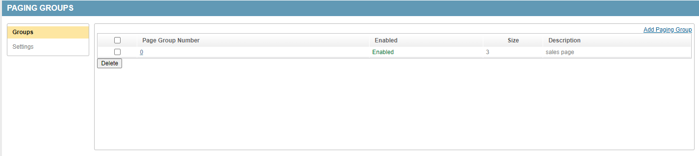
Paging Prefix¶
The page group number represents the digits that follow the prefix. For example, with the prefix set to *77, when dialing “*770” will invoke the page to page group 0.
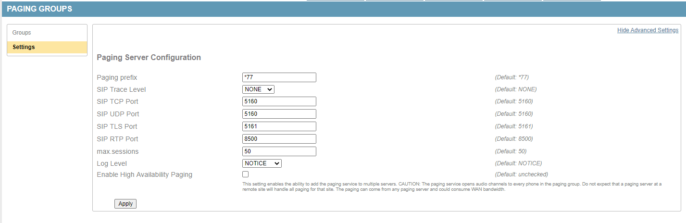
Paging Group options¶
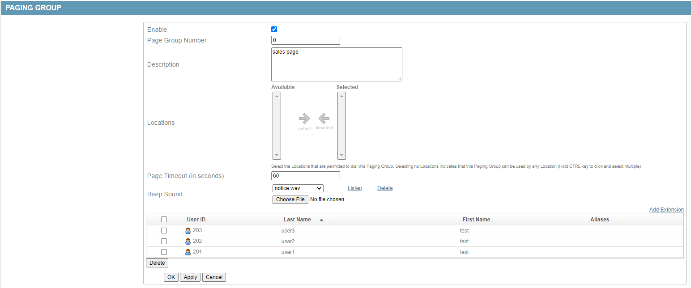
Phonebooks¶
The phonebook feature allows for central management of phone number directories. This allows users to look up phone extensions and numbers by name and dial directly from the directory. The administrator can create different directories per department, user group, or for individual users. In addition to maintaining a list of internal users, lists of external phone numbers can be imported as well. At present this feature is supported on Polycom and Snom phones.
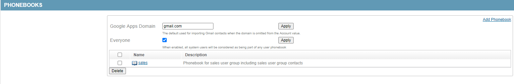
Phonebook Options¶
The administrator can specify a Google Apps Domain to append to contact information when the domain is ommited from an account name. When the Everyone check box is ticked, the system will automatically add all system users to any user phonebooks.
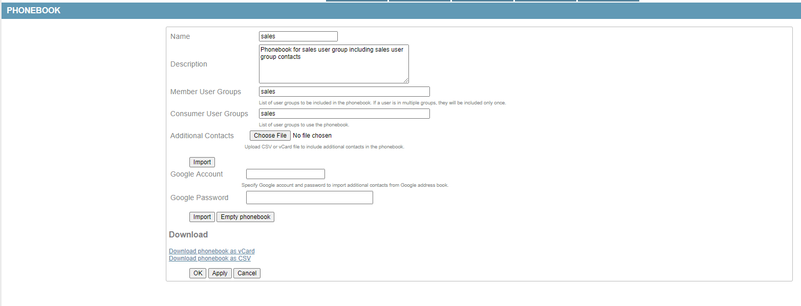
System Tab¶
The system tab includes the Databases, Dialing, Maintenance, Security, Servers, Services, and Settings menu options.
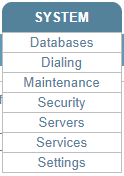
Databases¶
This is the configuration page for the MongoDB global and regional databases. A global database on each server in the cluster is an optional configuration. If running as a cluster MongoDB requires an odd number of servers in the replica set. For example 3 servers, each server running a full global databse. Or you could have 3 servers, two of them running a full global database and one server running arbiter service. See the MongoDB Manual on Replication . We also recommend reviewing the MongoDB Production Notes, particularly the part about NUMA hardware.
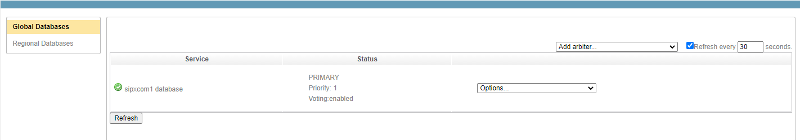
Database Settings¶
This page allows you to tweak settings of the mongo driver.
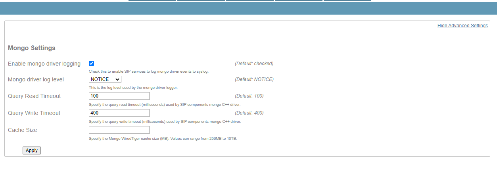
Increasing the Query Read Timeout and Query Write Timeout may be necessary if you have slow disks or a heavy disk IO frequently. If these are exceeded a warning is broadcast on the command line, for example:
Broadcast message from systemd-journald@sipxcom1.home.mattkeys.net (Sun 2020-10-18 17:29:30 EDT):
sipXproxy[25189]: ALARM_MONGODB_SLOW_READ Last Mongo read took a long time: document: node.subscription delay: 1698 milliseconds
Message from syslogd@sipxcom1 at Oct 18 17:29:30 ...
sipXproxy[25189]:ALARM_MONGODB_SLOW_READ Last Mongo read took a long time: document: node.subscription delay: 1698 milliseconds
Dialing¶
Dial Plans is the only sub menu item.
Dial Plans¶
This page allows you to utilize any gateways defined in the system, or to perform dial string manipulation to and from gateways. By default eight plans are created as templates. These are Emergency, International, Local, Long Distance, Restricted, Toll Free, AutoAttendant, and Voicemail.
Warning
Avoid the use of whitespace or special characters in the dial plan names. Dial plan configuration is written to files such as /etc/sipxpbx/mappringrules.xml on the filesystem. Special characters or whitespace may interfere with sipxconfig reading in, or writing out, data correctly to those files. To avoid this problem use lower case only and replace spaces with underscores in field entries, e.g. local_dialing.
Warning
Avoid creating dial plan entries that have no permission requirements. If you do, you may be creating an opportunity for your dial plan and gateways to be exploited.
Note
Ordering matters. Dial plan entries are read from top to bottom. Rules at the top are processed before the rules at the bottom.

Maintenance¶
The maintenance tab includes Backup, Import/Export, and Restore menu options.
Backup¶
The Backup page has two tabs - Local or FTP backups.
Note
The backup log is /var/log/sipxpbx/backup.log. Check it for clues if you’re having problems. Filenames (uploaded prompts, music on hold, etc) with whitespace or special characters can cause problems with archive creation.
Local¶
Local backups are stored on the server disk.
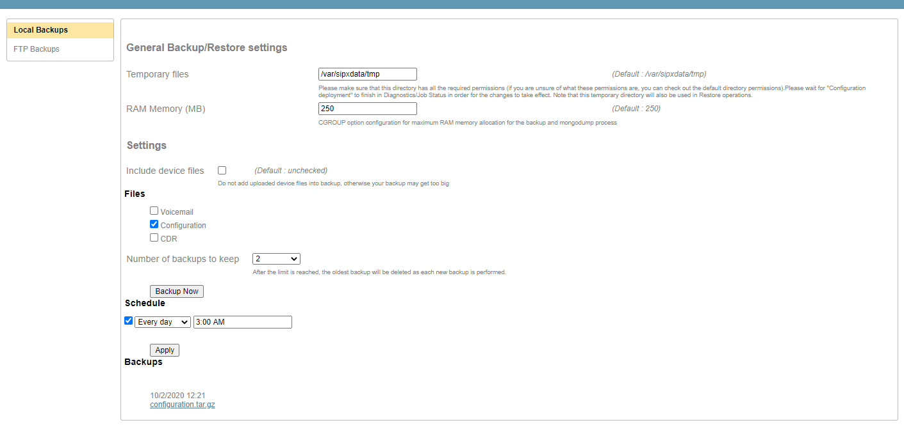
Warning
Creating a backup archive can use a lot of disk space, especially if voicemail is selected. If you run out of free disk space all services will halt! We strongly recommend setting “number of backups to keep” to 5 or less.
Import/Export¶
Import¶
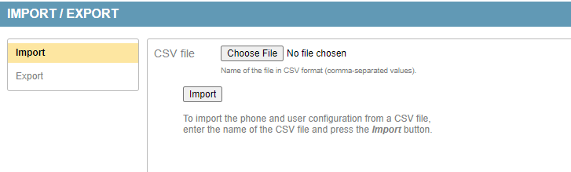
Phone and user data can be imported from a CSV file (comma separated values), which is compatible with most spreadsheet applications. The CSV should have a title line and the following fields:
- User name
- PIN
- Voice-mail PIN
- SIP password
- First name
- Last name
- User alias
- EMail Address
- User group
- Phone serial number
- Phone model
- Phone group
- Phone description
- IM ID
All CSV header fields as of 20.04:
User name,PIN,Voicemail PIN,SIP password,First name,Last name,User alias,EMail address,User group,Phone serial number,Phone model,Phone group,Phone description,Im Id,Salutation,Manager,EmployeeId,Job Title,Job department,Company name,Assistant name,Cell phone number,Home phone number,Assistant phone number,Fax number,Did number,Alternate email,Alternate im,Location,Home street,Home city,Home state,Home country,Home zip,Office street,Office city,Office state,Office country,Office zip,Office mail stop,Twitter,Linkedin,Facebook,Xing,Active greeting,Email voicemail notification,Email format,Email attach audio,Alternate email voicemail notification,Alternate email format,Alternate email attach audio,Internal Voicemail Server,Caller ID,Block Caller ID,Additional phone settings,Additional line settings,Auth Account Name,EMail address aliases,Custom 1,Custom 2,Custom 3
Each line from imported file will result in creation of the phone and the user assigned to that phone. If user group or phone group fields are not empty, the newly created user and phone will be added to respective groups. Groups will be created if they do not exist already.
If the user with the same username is already present, this system will update existing user instead of creating a new one. The same is true for phones: if the phone with the same serial number already exist it’ll be updated. Only user name and phone serial number are obligatory fields. You can leave the remaining fields empty - in which case this system will not overwrite their values.
Export¶
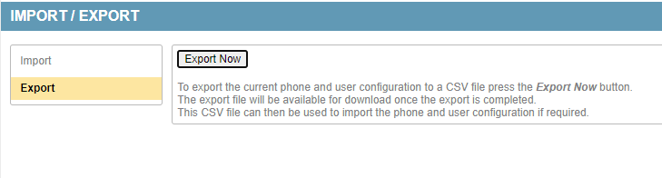
Restore¶
The restore feature allows administrators to restore configuration data, voicemail data, or CDR data. The gzip archives are created by the Backup feature.
Note
Backup archives from very old installations (prior to 14.04) may need to be restored in a series of incremental steps. In those cases a CSV restore of only user and phone data may be more appropriate.
Restore from FTP¶
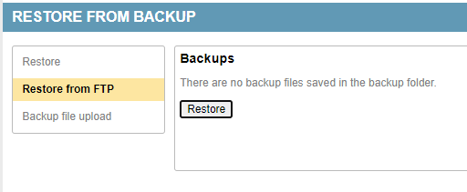
Backup file upload¶
Upload configuration, voicemail, or CDR data archives.
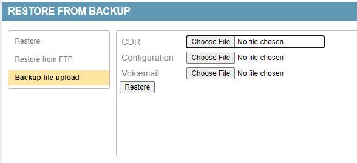
The options presented upon a configuration restore are to keep the existing SIP domain, keep the existing hostname, decode voicemail PINs or specify the voicemail PIN length, reset all voicemail PINs, and reset user passwords (user portal/IM password).
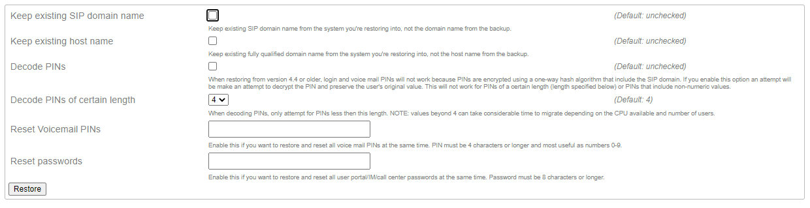
Security¶
Certificates¶
The system - certificates page has three tabs to the left, Web Certificate, SIP Certificate, and Certificate Authorities (CAs). The web certificate is used for https on the webui and device provisioning, SIP certificate for SIPS (SIP+TLS) connections, and the Certificate Authorities to load CA or any intermediary certificates.
Warning
Use of sips (5061) is not recommended because not all services work properly with it. If this is important to you we recommend offloading TLS (sips) on the way to the sipxcom with a Session Border Controller (SBC).
Firewall¶
Sipxcom includes a generic yet powerful firewall based upon netfilter iptables.
Groups¶
PUBLIC is all addresses (0.0.0.0), CLUSTER is only the servers in the sipxcom cluster. You can also add custom groups.
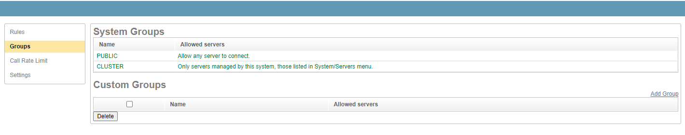
Call Rate Limit¶
Create Call Rate Limit Rule in order to prevent DoS attacks or to limit SIP traffic for the defined range of IPs. Leave end IP empty in case you want to define call rate limit for a single IP address or for a subnet.
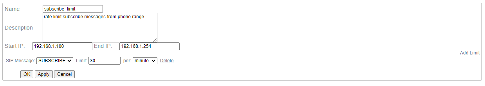
Settings¶
Use the settings page to add IPs or IP ranges (in CIDR format) to the whitelist (always allow), blacklist (always block), or new in 20.04 you can add the blacklist from LODs API Ban. Also important on this page are the “Log xxx” options. These are required for SIP Security mechanisms and rate limiting.
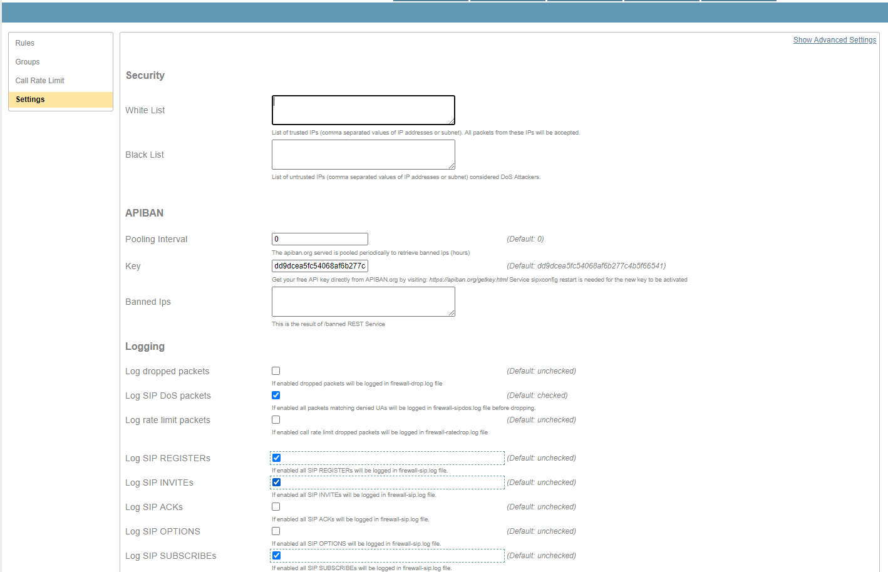
SIP Security¶
The SIP security page uses fail2ban to automatically ban IPs that have exceeded the thresholds defined. It does so by adding a rule to iptables to deny the source address all destinations.
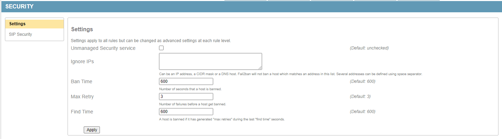
Usage of these mechanisms requires additional logging (see Firewall Settings section).
Warning
Do not use this feature if a Session Border Controller (SBC) is in use! All SIP traffic will originate from the SBC in that case and you wouldn’t want to ban that. The SBC should have rules in place to protect sipxcom. Use the sipcodes.sh script to verify those rules are working.
TLS Peers¶
To allow calls from an authenticated peer to use resources that require permissions, add the domain as a Trusted Peer and configure the permissions for it. The peer must use TLS to communicate to this system, and the Certificate Authority used to sign certificates must be installed on both systems.
Servers¶
The Servers page includes six tabs on the left: Servers, Core Services, Telephony Services, Instant Messaging, Device Provisioning, and Utility Services.
About sipxsupervisor (CFEngine)¶
Sipxsupervisor uses CFEngine, a configuration management and automation framework, to define the desired state and configuration of each server. The sipxsupervisor service (cfengine agent) running on each server ensures compliance. The key exchange model used for this process is based on that used by openssh. The keys are exchanged during the intitial setup script (just after the Is this the first server in the cluster? question).
Note
If a server in the cluster is showing “Uninitialized” in the status field, that generally indicates the primary (webui) server has lost communication with the cfengine agent running on that server. To correct the problem try issuing on the affected server:
service sipxsupervisor restart
It expected to see Uninitialized status if you have defined the server in the webui, but have yet to run the sipxecs-setup script on the server to complete the key exchange.
Warning
Do not alter the sshd (or firewall, network, etc) configuration in such a way that would prevent root login between the servers. This will break sipxsupervisor (cfengine) communication. Running other configuration management agents such as Puppet or Chef will also conflict with sipxsupervisor (cfengine).
Servers¶
This page lists each server in the cluster as a hyperlink. The status field indicates if sipxsupervisor (cfengine) is responding and healthy on that server.
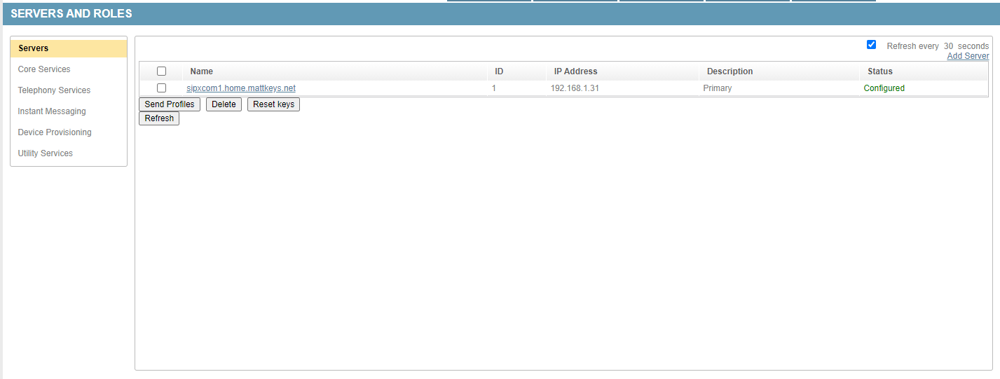By clicking the link of a server, you can restart any service on that server. This is also accomplished by communicating with sipxsupervisor (cfengine) on that server.
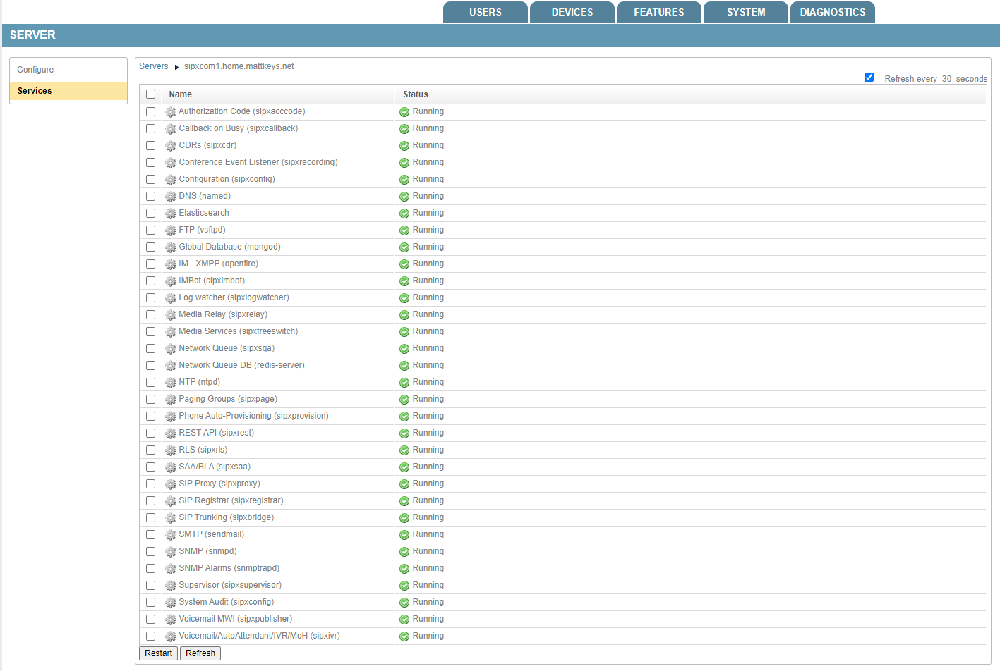
Sending Server Profiles¶
The send profiles button forcefully redeploys all configuration, for all services, to the selected servers. The cfengine term for this is configuration convergence. Any affected services will be restarted (if required) automatically by the agent.
Note
Upon sending server profiles you can verify the connection took place by monitoring (tail -f) /var/log/messages of the server(s). The log entry should look similar to:
Oct 19 18:16:53 sipxcom1 cf-serverd[16545]: Accepting connection from "192.168.1.31"
Reset Keys¶
The Reset Keys option attempts to re-establish stored authentication key pairs used by sipxsupervisor (cfengine) agents in the cluster. The key exchange model is based on that used by OpenSSH. It is a peer to peer exchange model, not a central certificate authority model.
Note
To verify the network path is good, ssh as root to each server in the cluster, and from each server in the cluster.
Warning
Only use Reset Keys if the key pairs that were established during initial setup have changed. You should have a good explaination as to why the stored keys have changed.
If needed you can force the sipxsupervisor (cfengine) agent of any server to run configuration convergence by issuing on the command line:
sipxagent
Similar to Sending Server Profiles, you can verify by checking for agent connection log entries in /var/log/messages of the server(s).
Core Services¶
This page allows you to enable or disable DHCP, DNS, Elasticsearch, Firewall, Log watcher, NTP, SIP Security, SMTP, SNMP, SNMP Alarms, and System Audit. A sipxcom feature might require one or more of these services to be enabled. Some services can only run on the primary server.
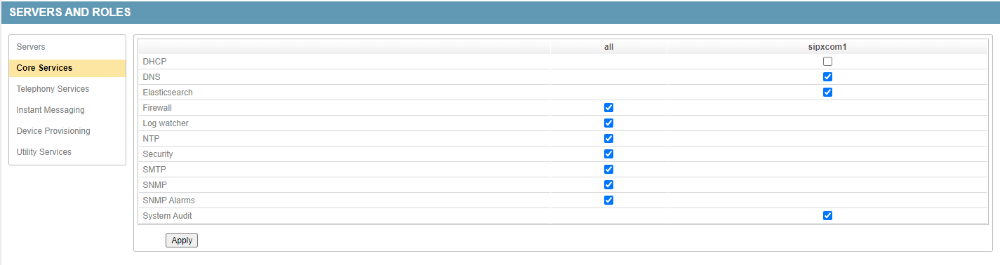
Telephony Services¶
This page lists all telephony related services, and what server it is enabled on in the cluster. Some services can only run on the primary server. Some services require other services to be enabled. The webui should refresh in that case and highlight service(s) required.
Instant Messaging¶
This page allows you to enable or disable the OpenFire XMPP server service. The My Buddy function is dependant upon the IMBot service being enabled. The IMBot depends upon the IM-XMPP feature.
Device Provisioning¶
This page allows you to enable or disable the DHCP, FTP, Phone Auto Provisioning (HTTP/HTTPS), Phone Logging (syslog server), or Trivial FTP (tftp) services.
Utility Services¶
This page allows you to enable automatic packet captures using tcpdump.
Warning
This is resource intensive and should only be enabled to assist in troubleshooting a problem that you can replicate. If you enable this don’t forget to review settings beneath Diagnostics - Network Packet Capture - Configure tab.
Services¶
The Services menu has the CDR, Conference Event Listener, DNS, FTP Server, Instant Messaging, Log Watcher, Media Services, MWI, My Buddy, Phone Provision, Rest Server, SAA/BLA, Service Msg Queue, RLS, SIP Proxy, SIP Registrar, SIP Trunk, SNMP, and Voicemail options.
CDR¶
Conference Event Listener¶
DNS¶
The DNS menu has five tabs to the left: Settings, Fail-over Plans, Record Views, Custom Records, and Advisor.
Settings tab¶
If using Managed DNS, sipxcom (sipxsupervisor/cfengine) will manage the DNS zone file, which is stored beneath /var/named/, and the DNS server configuration file /etc/named.conf.
If using Unmanaged DNS, sipxcom (sipxsupervisor/cfengine) will not change the zone file or /etc/named.conf.
Fail-over Plans¶
Fail-over plans control what services are used and when and how much traffic they receive. Fail-over plans are used in DNS record views and they can be reused for many views.
A fail-over plan controls how traffic flows into and through the cluster when there is a server or network failure. This can also be used when you want to distribute traffic unevenly through your system to account for resource constraints or various other reasons. It’s important to understand that regardless of the failover plan, once traffic hits a server the services that are local to that server will be preferred. For example, you may have a SIP proxy take 1% of the traffic, but once the SIP REGISTER message enters that server it will use the local registrar. The failover plan will only be used if the local registrar does not respond.
Record Views¶
Record views allow you to have a different set of DNS records for a region of your network.
The default SRV record priority and weight will distribute traffic evenly among all cluster members.
Custom Records¶
You’ll need to add records for entries missing from the default plan such as MX or A records.
Click ‘Add custom record’ to create new zone entries.
After saving the new record(s), navigate to Record Views and click the zone. Highlight the records to add into the zone next, then click apply. The preview should now dispaly the new records at the bottom of the zone.
Advisor¶
FTP Server¶

Instant Messaging¶
Log Watcher¶
Service that reads incoming log messages and reacts accordingly. Typically used to trigger a SNMP alarms.
Note
This setting does not change the log verbosity of other services.
Media Services¶
This is the configuration page for Media Services (FreeSWITCH). WAV or MP3 files can be used for prompts, MoH, and voicemail recordings. Audacity is a good program to use to create or convert media files. Another popular utility is Sound Exchange (sox).
Note
wav files must be in the appropriate format of RIFF (little-endian) data, WAVE audio, Microsoft PCM, 16 bit, mono 8000 Hz
An easy way to record a file quickly is to use the Voicemail Attachment option beneath the user profile Unified Messaging tab. The file attachment will be in the proper format. By default 8 is the voicemail prefix. So if your extension is 200, dial 8200 to immediately deposit a voicemail to yourself.
Each server running media services (freeswitch) in the cluster is listed and can be individually edited.
The Settings tab on the left are global settings.
Message Waiting Indicator (MWI)¶
My Buddy¶
Phone Provision¶
The Provision Menu is used to upload phone firmware. There are two menu options of Device Files and Settings.
Note
All generated phone configuration files are beneath /var/sipxdata/configserver/phone/profile/tftproot/. Any phone custom configuration (Unmanaged TFTP) files and uploaded firmware archives are deployed beneath that path as well.
Device Files¶
To find the latest GA for your model Polycom visit the Polycom firmware matrix. There are two pages, one for SoundPoint and SoundStation IP models, and the other for VVX models.
The Version drop-down is only a label to distinguish a set of files. It is not required to match the actual firmware version.
The firmware application zip is extracted to the server filesystem beneath whatever the label was set to:
# ls -l /var/sipxdata/configserver/phone/profile/tftproot/polycom
total 8
drwxr-xr-x 5 sipx sipx 4096 Oct 2 10:02 4.0.X
drwxr-xr-x 5 sipx sipx 4096 Oct 2 10:02 5.5.2
You can load any version, but if there is a difference document that in the description field. If there is a large difference there will likely be missing features or configuration options. Try to stay in the ballpark (3.2.x, 4.0.x, 5.x) if possible. In the screenshot below I have version 5.9.6 firmware loaded into the 5.5.2 slot.
This label must match in the phone profile.
There is also a setting for this at the phone group level.
Note
Be cautious of conflicting group firmware versions if the phone is a member of multiple phone groups. When troubleshooting it is a good idea to remove the phone from all phone groups and just use the phone level setting so there is no doubt what it will download.
The bootrom is only required for special circumstances. For example, when upgrading SPIP phones between version 3.2.x and version 4.0.x a special upgrader bootrom is required. A separate downgrader bootrom may be required for the inverse from 4.0.x to 3.2.x. Check the release notes of the firmware version you’re interested in for instructions.
Warning
Using a incompatible version firmware application archive or bootrom will result with the phone being stuck in a reboot loop.

Example custom configuration files¶
If a needed feature or configuration option is missing from the device profile a custom configuration file may be a possible workaround. For example:
This file sets blind transfer as the default transfer method on Polycom SPIP and VVX phones. Blind should always work, consultative (also known as attended) transfers have limitations. For example, you cannot consultative transfer to a voicemail or conference target (anything freeswitch), and possibly PSTN targets (depending on your pstn gateway).
This file removes 100rel support from a Polycom SPIP or VVX phone. This would prevent the phone from responding to PRACKs.
Building a custom configuration file¶
The Polycom UC Software Administrator Guide describes all the options available and what template should be used.
The templates can be found on the server filesystem after you’ve uploaded the application zip:
# ls -l /var/sipxdata/configserver/phone/profile/tftproot/polycom/4.0.X/Config/
total 3764
-rw-r--r-- 1 sipx sipx 2322 Oct 2 10:02 applications.cfg
-rw-r--r-- 1 sipx sipx 13927 Oct 2 10:02 device.cfg
-rw-r--r-- 1 sipx sipx 22823 Oct 2 10:02 features.cfg
-rw-r--r-- 1 sipx sipx 1162 Oct 2 10:02 H323.cfg
-rw-r--r-- 1 sipx sipx 3605355 Oct 2 10:02 polycomConfig.xsd
-rw-r--r-- 1 sipx sipx 9393 Oct 2 10:02 reg-advanced.cfg
-rw-r--r-- 1 sipx sipx 529 Oct 2 10:02 reg-basic.cfg
-rw-r--r-- 1 sipx sipx 31638 Oct 2 10:02 region.cfg
-rw-r--r-- 1 sipx sipx 739 Oct 2 10:02 sip-basic.cfg
-rw-r--r-- 1 sipx sipx 21262 Oct 2 10:02 sip-interop.cfg
-rw-r--r-- 1 sipx sipx 104003 Oct 2 10:02 site.cfg
-rw-r--r-- 1 sipx sipx 5271 Oct 2 10:02 video.cfg
-rw-r--r-- 1 sipx sipx 505 Oct 2 10:02 video-integration.cfg
Uploading a custom configuration file¶
Use the “Unmanaged TFTP Files” option to upload the custom configuration file(s). You can upload multiple files in one, or create multiple individual unmanaged tftp files entries. Don’t forget to provide a description as to what it is supposed to do.
Adding the custom config to a phone¶
Navigate to devices - phones, select the phone, then select the ‘custom configuration’ tab in the phone profile. You can also set this at the phone group level. Type the filename exactly (case sensitive) as it exists on the filesystem. If you have multiple custom config files, use a comma with no space between filenames. Apply to save, then send profiles to the phone.
Upon sending profiles to the phone the custom configuration files are added to the $mac.cfg
# grep "CONFIG_FILES" /var/sipxdata/configserver/phone/profile/tftproot/111122223333.cfg
CONFIG_FILES="100reldisable.cfg,blindxferdefault.cfg,[PHONE_MAC_ADDRESS]-sipx-applications.cfg,[PHONE_MAC_ADDRESS]-sipx-features.cfg,[PHONE_MAC_ADDRESS]-sipx-reg-advanced.cfg,[PHONE_MAC_ADDRESS]-sipx-region.cfg,[PHONE_MAC_ADDRESS]-sipx-sip-basic.cfg,[PHONE_MAC_ADDRESS]-sipx-sip-interop.cfg,[PHONE_MAC_ADDRESS]-sipx-site.cfg,[PHONE_MAC_ADDRESS]-sipx-video.cfg"
Note
The phone must be configured (possibly manually) to download from the server. Polycom phones use DHCP option 66 (tftp:// or ftp://), or option 160 (http:// or https://) for the provisioning server address. If both are specified option 160 is preferred. It’s also a good idea to specify option 42 for NTP servers.
Rest Server¶
SAA/BLA¶
Service Msg Queue¶
RLS¶
SIP Proxy¶
SIP Registrar¶
SIP Trunk¶
SNMP¶
Voicemail¶
Settings¶
The Settings menu includes Admin, Authentication, Date and Time, DID Pool, Domain, Extension Pool, Internet Calling, Localization, Locations, NAT Traversal, Permissions, and Regions menu options.
Admin¶
Authentication¶
LDAP/Active Directory is the only menu item.
LDAP/Active Directory¶
This page is used to manage (read only) Lightweight Directory Access Protocol (LDAP) or Microsoft Active Directory (AD) connections. There are two tabs to the left, Configuration and Management Settings.
Values which can be imported are listed in the following table along with the recommended AD attribute.
| Value | Description | AD Attribute |
| User ID | Represents the user ID. The value must be unique. | ipPhone |
| First name | The first name of the user. | givenName |
| Last name | The last name of the user. | sn |
| Alias | If this has more than one value a separate alias will be created for each. You can map multiple LDAP attributes and each LDAP attribute mapped can have multiple values. | sAMAccountName |
| Email address | If this has more than one value a separate alias will be created for each. | |
| User Groups | If this has more than one value the user will be added to multiple groups. Groups are created as necessary. | ou |
| Voicemail PIN | The user PIN code to access voicemail. When blank imported users are assigned a default PIN. | |
| Default PIN | The default (voicemail) PIN code. | |
| Confirm Default PIN | Confirmation of the above. | |
| SIP Password | If blank or not mapped sipxcom will automatically generate a random SIP password for each imported user. If it is mapped to something you will somehow need to regenerate phone profiles for all phones assigned to the user as well. | |
| IM ID | The instant message (IM) ID. | sAMAccountName |
| Job Title | The user job title. The value is saved under the user contact information. | title |
| Department | The user job department. | department |
| Company Name | The name of the company. | company |
| Assistant Name | The user assistant or secretary name. | secretary |
| Mobile Phone | The user mobile phone number. | mobile |
| Home Phone Number | The user home phone number. | homePhone |
| Assistant phone number | The assistant or secretary phone number. | telephoneAssistant |
| Fax Number | The users fax number. | facsimileTelephoneNumber |
| Alternate email | Alternative email addresses for the user. | |
| Alternate IM Account | Alternative IM accounts | |
| Location | The user location. | |
| Home Address | ||
| Street | ||
| City | ||
| State | ||
| Country | ||
| Zip Code | ||
| Office Address | ||
| Street | streetAddress | |
| City | city | |
| State | st | |
| Country | co | |
| Zip Code | postalCode |
Configuration¶
As a good security practice you should create a user in LDAP or AD with read only permissions for the sole purpose of syncing data to sipxcom. It is also a good idea to keep service or admin level accounts in their own OU.
- Host: Enter the IP address or fqdn of the server running LDAP/AD services.
- Domain: This specifies the user domain. The value is saved as a user setting and can be used for sipxcom web portal authentication (as user@domain or domain\user as the username).
- Use TLS: Enable or disable SSL/TLS connections to your LDAP/AD server (ldaps://).
- Connection Read Timeout: If there is no response from the LDAP server within the specified period, the read attempt is aborted. A value less than or equal to 0 will disable the read timeout and wait indefinately. The default value is 10 seconds.
- Port: The port number on which the LDAP/AD server is listening. The default port for LDAP is 389 or 636 for LDAPS.
- User/Password/Confirm Password: Credentials of the read only user that was created for the purpose of ldap/ad sync.
Management Settings¶
Date and Time¶
Date and Time is the NTP service configuration. There are three tabs to the left, Settings, Time Zone, and Unmanaged Service.
Device Time Zone¶
DID Pool¶
Domain¶
Extension Pool¶
Internet Calling¶
Localization¶
Locations¶
NAT Traversal¶
Permissions¶

Regions¶
Regions are used to organize servers into groups based on your network topology. Servers with the same region are generally located on the same LAN and have very low latency between the servers. Regions are used to determine how local databases and DNS is configured.
Diagnostics Tab¶
The diagnostics tab includes About, Alarms, Banned Hosts, Call Detail Records, Job Status, Network Packet Capture, Registrations, SIP Trunk Statistics, Snapshot, and System Audit menu options.
Alarms¶
The Alarms page has four tabs to the left - Configuration, Alarm Groups, Trap Receivers, and History.
Configuration¶
Alarm Groups¶
Trap Receivers¶
History¶

Banned Hosts¶
This page displays IPs that have been banned by the SIP Security rules. You can also unban hosts from this page.
Call Detail Records¶
The Call Detail Records page has three tabs to the left - Active, Historic, and Reports.
Active¶
Historic¶
Reports¶
Job Status¶
There are two tabs to the left, Failed and Successful jobs.
Failed Jobs¶
Often sending profiles to a phone that is not currently registered, powered off, or disconnected from the network will trigger an entry here.

Successful Jobs¶
Network Packet Capture¶
Network Packet Capture can be used to automate rolling packet captures on all servers in the cluster.
Configure¶
Configure the size of each pcap file and number of pcaps to keep.
Warning
If you run out of free disk space all services will halt! The default settings will consume 5GB (per server).
SIP Trunk Statistics¶
This page shows the current status of any SIP trunks that are using the sipxbridge service.
Snapshot¶
Snapshot archives contain the logs and configuration data needed to troubleshoot without having access to the command line of the server.
Note
The snapshot log filter percentage can only cover the current day logs. 99% will grab everything for today but will also increase the size of the resulting archive.
On Windows you will need a utility installed that can extract tar or gzipped archives. We recommend 7-zip . Notepad++ is recommended for viewing log data rather than Notepad, WordPad, or Word. WinMerge is recommended for side-by-side file comparisons.
On Mac or Linux copy the archive to a location on the filesystem and use the following command:
tar -zxvf sipx-snapshot-host.domain.tar.gz

{kind=link}